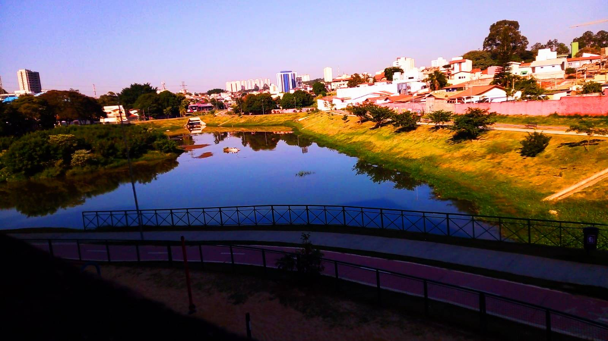

Alunos:Isaias e Rayssa
A seguir, mostraremos algumas fotos que tiramos na escola, podendo mostrar sua beleza em diversos aspectos e aplicando algumas tecnicas de edição de imagens básicas
Antes
Editada

Foto tirada pelo aluno Isaias,foi editada pelo Photoshop, utilizamos as ferramentas da barra filro e entramos na aba "Camera Raw", e mudamos o brilho, saturação exposição, temperatura e contraste
Antes
Editada
foto tirada pela aluna Rayssa, foi editada pelo Photoshop, utilizamos as ferramentas da barra filro e entramos na aba "Camera Raw", e mudamos o brilho, saturação exposição, temperatura e contraste
Antes
Editada
Foto tirada pelo aluno Isaias, foi editada pelo Photoshop, utilizamos as ferramentas da barra filro e entramos na aba "Camera Raw", e mudamos o brilho, saturação exposição, temperatura e contraste
Antes
Editada
Tirada pela aluna Rayssa. Essa foto foi editada pelo Photoshop, utilizamos as ferramentas da barra filro e entramos na aba "Camera Raw", e mudamos o brilho, saturação exposição, temperatura e contraste